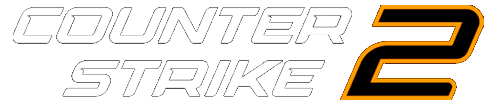
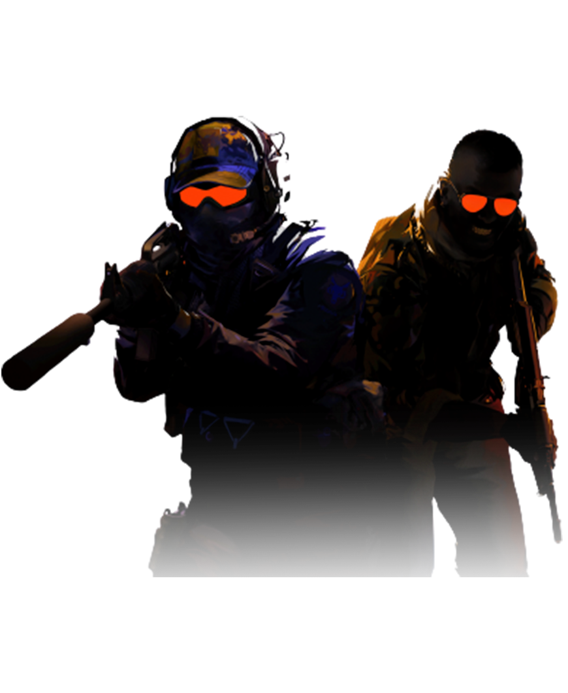

Há mais de duas décadas, o Counter-Strike oferece uma experiência competitiva de elite moldada por milhões de jogadores mundialmente. Agora, o próximo capítulo da história do CS vai começar. Isso é Counter-Strike 2. Uma atualização gratuita para o CS:GO, o Counter-Strike 2 é o maior salto tecnológico na história da série. Feito na engine Source 2, o Counter-Strike 2 foi modernizado com renderização realística baseada na física, mecanismos de conexão de ponta e ferramentas da Oficina aprimoradas.
X